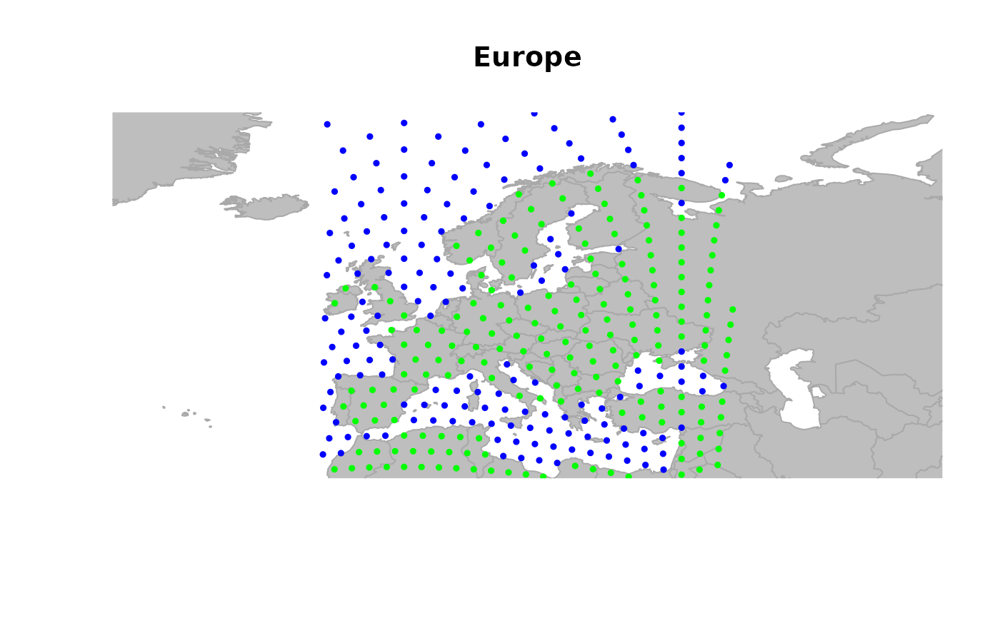
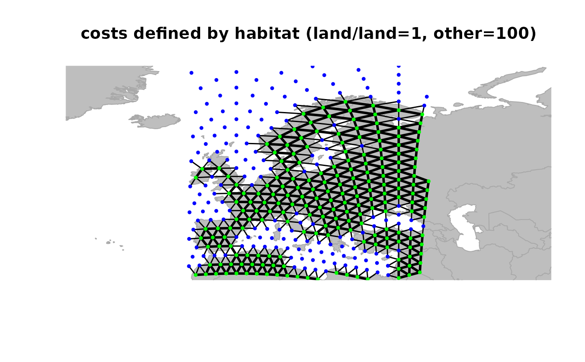
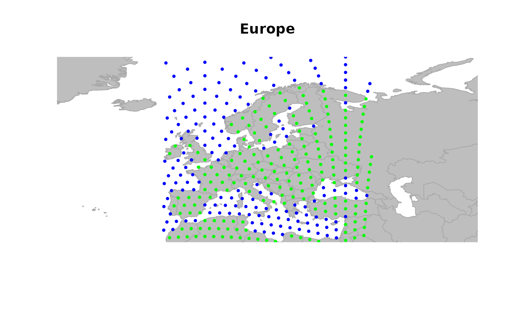
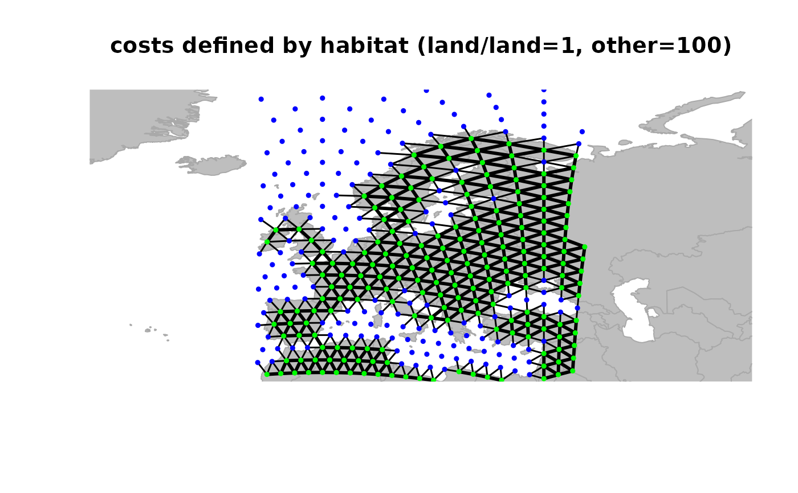

The function setCosts define costs for the edges of a
gGraph object according to a node attribute and some rules
defined in the @meta\$costs slot of the object. Each node has a value
for the chosen attribute, which is associated to a costs (a friction). The
cost of an edge is computed as a function (see argument method) of
the costs of its nodes.
Usage
setCosts(
x,
attr.name = NULL,
node.values = NULL,
method = c("mean", "product", "function"),
FUN = NULL,
...
)Arguments
- x
a gGraph object with a least one node attribute, and a
@meta$costscomponent (for an example, see worldgraph.10k dataset).- attr.name
the name of the node attribute used to compute costs (i.e., of one column of
@nodes.attr).- node.values
a numeric vector giving costs associated to the nodes. If provided, it will be used instead of
attr.name.- method
a character string indicating which method should be used to compute edge cost from nodes costs. Currently available options are 'mean', 'prod' and 'function', where the cost associated to an edge is respectively computed as the mean, the product or a custom function (defined in
FUN) of the costs of its nodes.- FUN
a function used to compute the cost between two nodes (needed if
method="function").- ...
additional parameters to be passed to
FUN.
Value
A gGraph object with the newly defined costs used as weightings of edges.
Details
Note that costs are inversely proportional to connectivity between edges:
the larger the cost associated to an edge, the lower the connectivity
between the two concerned nodes.
Also note that 'costs' defined in geoGraph are equivalent to
'weights' as defined in graph and RBGL packages.
See also
dropDeadEdges, to get rid of edge whose cost is below
a given threshold. geo.add.edges to add edges to a
gGraph object.
Examples
plot(rawgraph.10k, reset = TRUE)
 ## zooming in
geo.zoomin(list(x = c(-6, 38), y = c(35, 73)))
title("Europe")

## defining a new object restrained to visible nodes
x <- rawgraph.10k[isInArea(rawgraph.10k)]
## define weights for edges
x <- setCosts(x, attr.name = "habitat")
plot(x, edges = TRUE)
title("costs defined by habitat (land/land=1, other=100)")

## zooming in
geo.zoomin(list(x = c(-6, 38), y = c(35, 73)))
title("Europe")

## defining a new object restrained to visible nodes
x <- rawgraph.10k[isInArea(rawgraph.10k)]
## define weights for edges
x <- setCosts(x, attr.name = "habitat")
plot(x, edges = TRUE)
title("costs defined by habitat (land/land=1, other=100)")
